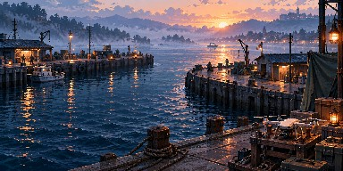
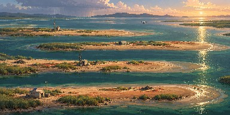
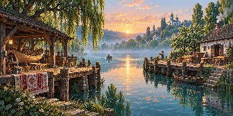
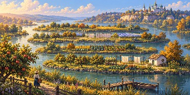
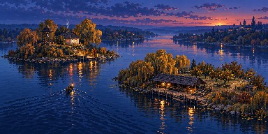
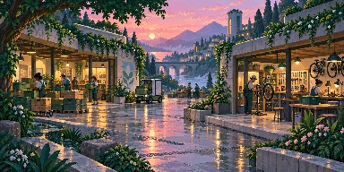
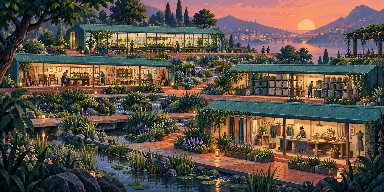

FPV Front





Ukraine Atlas






1994 Forever


Spend Network




Twelve source candidates. Select a preview to inspect its untouched original PNG here. These scenes echo composition cues; they are not collision maps or evidence of runtime adoption or full quality.
Guide and caveats





